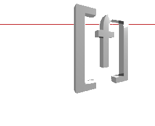

 En esta pequeña página web vamos a hacer referencia a todos los manuales y documentos digitales que se han entregado. Además, puedes acceder directamente a esos ficheros pulsando directamente encima del enlace correspondiente.
El objetivo de este ejercicio es hacer un pequeño repaso de todo lo visto hasta ahora. Desde formato de texto, imágenes, listas (numeradas y viñetas), listas y enlaces.
Para que no tardes mucho en escribir todo este texto, puedes copiarle y pegarle en el bloc de notas. Luego solamente le tienes que dar formato a través de las etiquetas html que hemos visto.